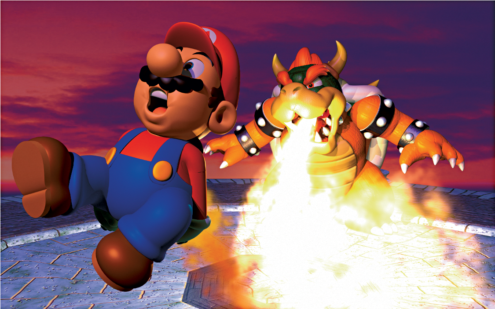
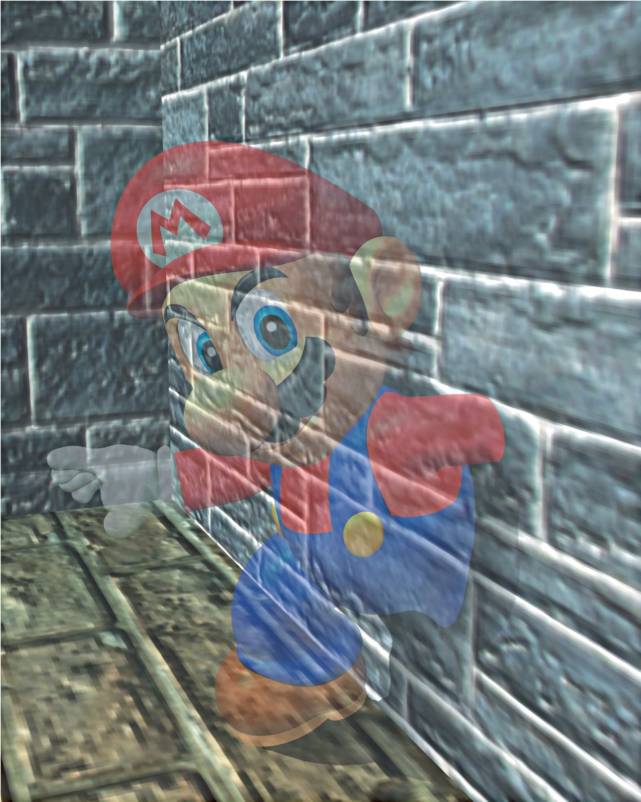
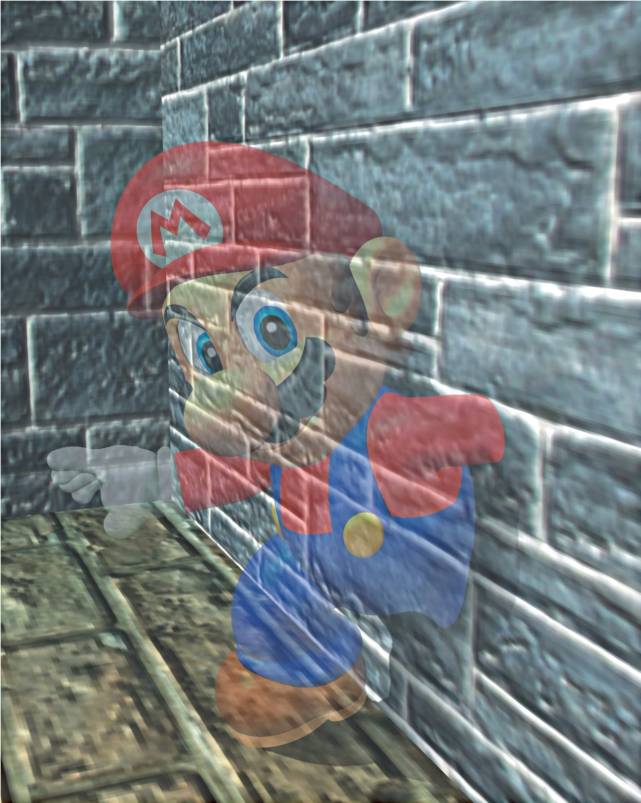

Hello and welcome to NKY98's Super Mario 64 fansite!
 Don't give up Mario!
The history of Super Mario 64
Super Mario 64 was originally released on June 23rd 1996 in Japan. Super Mario 64 was Mario's first adventure with 3-D environments and gameplay. Mario was given all new abilities such as the Wing Cap, METAL Cap, and the Vanish Cap. However, no Mario game would be complete without Bowser; who has returned once again. Mario must thwart Bowser's evil plan and save Princess Peach

 
